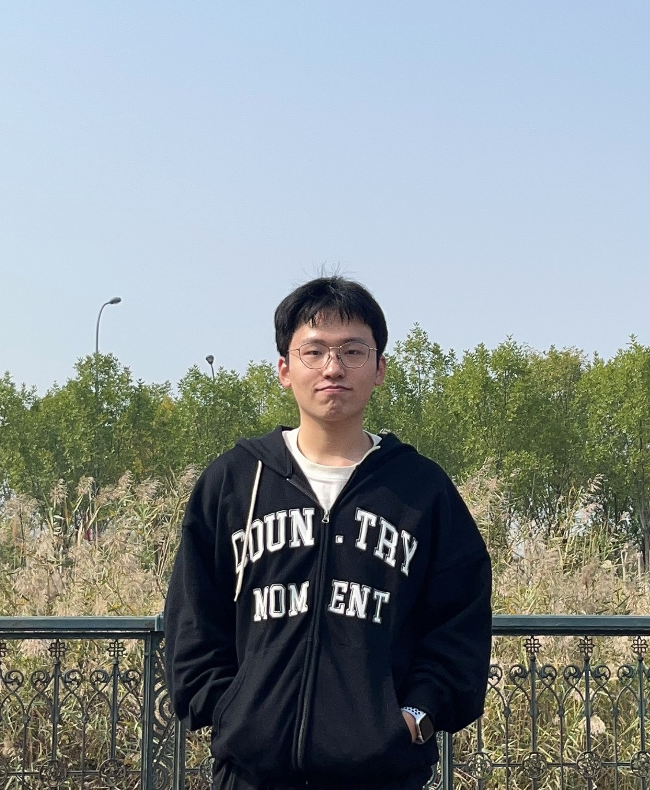
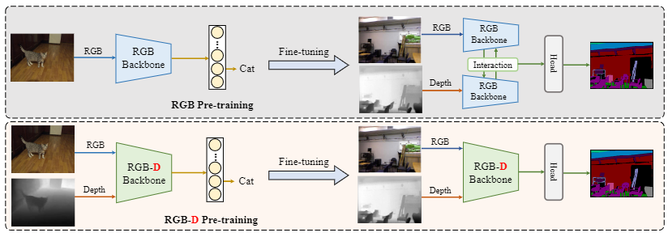
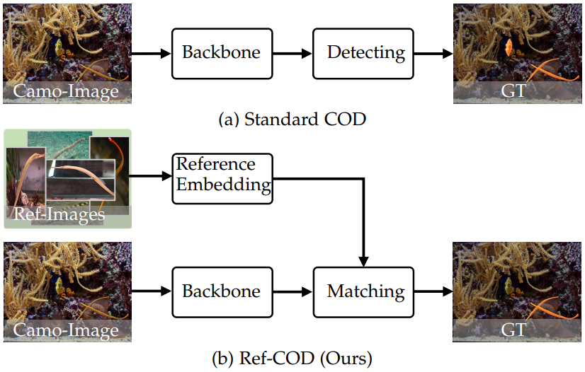
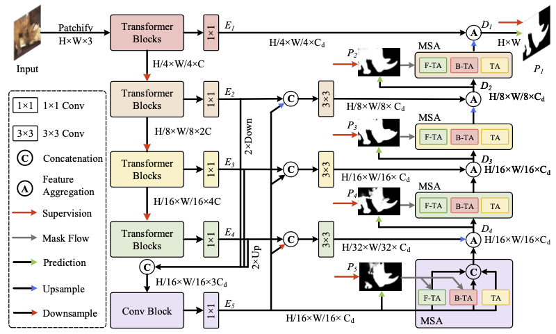

|  |
First-year Ph. D Student at Nankai University
|
I am currently a first-year Ph.D student in VCIP, Nnakai University, advised by Prof. Qibin Hou and Prof. Ming-ming Cheng and Yu-ming Chen.
My recent research interests are in (2D/3D) vision learning.
* Eauql contribution. ✉ Corresponding author.
| 01 | Bowen Yin, Xuying Zhang, Zhongyu Li, Ming-Ming Cheng, Qibin Hou✉
DFormer: Rethinking RGBD Representation Learning for Semantic Segmentation arXiv preprint arXiv: (Under Review) [paper] [code] [BibTex] |
| 02 | Xuying Zhang*, Bowen Yin*, Zheng Lin, Qibin Hou✉, Dengping Fan, Mingming Cheng
Referring Camouflaged Object Detection arXiv preprint arXiv:2306.07532 (Under Review) [paper] [code (30+ stars)] [BibTex] |
| 03 | Bowen Yin*, Xuying Zhang*, Qibin Hou✉, Boyuan Sun, Dengping Fan, Luc Van Gool
CamoFormer: Masked Separable Attention for Camouflaged Object Detection arXiv preprint arXiv:2212.06570 (Under Review) [paper] [code (40+ stars)] [BibTex] |